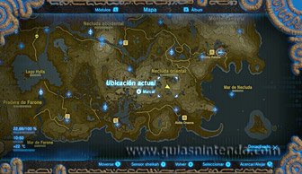
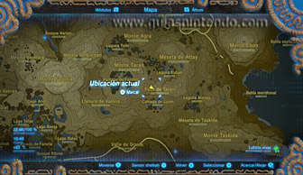
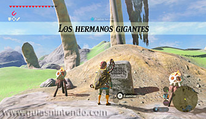
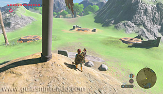
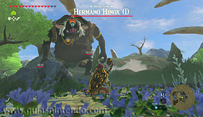
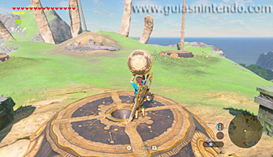
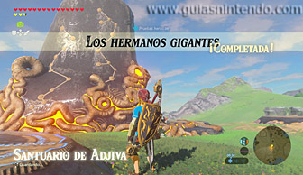
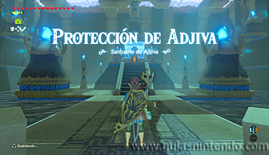
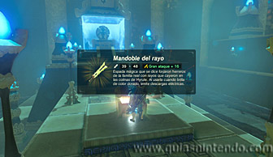

Este santuario se encuentra en la región de la torre de Farone, aunque para encontrarlo primero debes superar una Prueba heroica (Los hermanos gigantes) para que la entrada se desbloquee. El santuario lo encuentras al sur de la torre de Necluda, al este del monte Taran que está ubicado al oeste del paso de Taran.

Al llegar allí encontrarás una tabla de piedra que te activará la prueba heroica "Los hermanos gigantes", la cual consiste en colocar tres esferas en tres pedestales que hay frente a dicha tabla.

Podrás encontrar las esferas derrotando a tres Hinox que hay cerca del monte Taran, en unas zonas en las que hay unos huesos gigantes: en la laguna Kuhan (Hinox), en la ciénaga de Luren (Hinox azul) y en el pantano de Fandell (Hinox negro).

Cuando logres derrotar a los tres enemigos y poner sus esferas en los tres pedestales completarás la prueba heroica y aparecerá la entrada al santuario. Si pierdes una esfera de vista, aparecerá de nuevo en el centro del lugar donde venciste al Hinox correspondiente.

Dentro solo verás un cofre y el altar. Dentro del cofre puedes coger un mandoble del rayo. Cuando llegues al altar podrás examinarlo para obtener un símbolo de valía.
